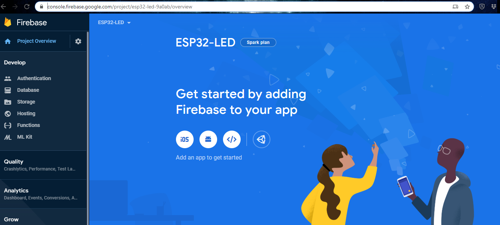
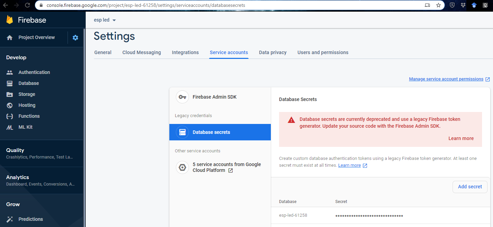

Huzzah
Huzzah Workshop
Materials needed for this tutorial:
- Huzzah board
- Protoboard
- LED
The previous tutorial showed how to build a web interface to control your ESP32 over a Local Area Network. If you want to talk to your ESP32, you'll need to do a bit more work. There are many options:
- Build a full-stack server with a Model View Controller (MVC) architecture. Useful tools for this include IBM or Amazon Web Services.
- Use a 3rd party platform designed to allow for a server-less IoT. Examples include Adafruit IO, ThingSpeak,
- Use a service like If This, Then That (IFTTT) to manage websocket connections. This service has gotten a bit more "business-oriented" than the previous examples, and doesn't allow direct or low-level control over your IoT devices (at least not without subscribing). It does feature lots of integrations to applications like Google Sheets, which you can use for data logging. It might also be the best choice if you want to do things like send an email every time an event is triggered.
- A final option is to use a 3rd party platform that acts as a general-purpose database for your IoT project. We'll use Google Firebase for this. Like the other 3rd party platforms, we'll be able to talk to your device from anywhere in the world. But we can also talk to the Firebase Realtime Database from personal webpages, or build a full-fledged app with logins and permissions on top of it.
The first step is to head to Firebase and sign in with your Google account. Click "Get Started" and then "Add Project". Next, specify your project name (I called mine ESP32-LED), which will be used to generate a url (like https://esp32-led-9a0ab.firebaseio.com) where you can access your project database. You can opt in to Google Analytics if you wish. Click OK; you should be taken to the Firebase console page for your project. Click "Database" from the panel on the left.
Scroll down to Realtime Database and click "Create database". For the Security rules options, select "Start in test mode" (you can change this later). Your Database console should now look something like this:

You are looking at the root of your database, which is "null" because there isn't anything there yet. Next we need to create a secret key to give to our Huzzah board so it can access this database. Click the gear icon next to "Project Overview" and select "Project settings". On the "Project settings" page, click "Service accounts" and then "Database secrets":
Hover over the secret key, and select "Show". Copy this and save it somewhere to use in later steps. Also make sure to write down the auto-generated URL where you can access your database (something like esp32-led-9a0ab.firebaseio.com).
Set up your circuit so that there is an LED attached to pin 5. In Arduino IDE, make sure you've installed the necessary libraries for ESP32 and the Feather boards (see previous step if not).
Additionally, we need to add another library in order to talk to Firebase. Go to https://github.com/ioxhop/IOXhop_FirebaseESP32 and download the ZIP. In Arduino, go to Sketch > Include Library > Add .ZIP Library and find the zip file you just downloaded.
In Arduino IDE, we can start with some of the WiFi library boilerplate code that we used in the last example (no need to start a server instance this time). Also, paste in your key and URL from Firebase.
#include <WiFi.h> // esp32 library
#include <IOXhop_FirebaseESP32.h> // firebase library
#define FIREBASE_HOST "esp32-led-9a0ab.firebaseio.com/" // the project name address from firebase id
#define FIREBASE_AUTH "" // the secret key generated from firebase
#define WIFI_SSID "" // input your home or public wifi name
#define WIFI_PASSWORD "" //password of wifi ssid
String fireStatus = ""; // led status received from firebase
int led = 5;
void setup() {
Serial.begin(9600);
delay(1000);
pinMode(5, OUTPUT);
WiFi.begin(WIFI_SSID, WIFI_PASSWORD); //try to connect with wifi
Serial.print("Connecting to ");
Serial.print(WIFI_SSID);
while (WiFi.status() != WL_CONNECTED) {
Serial.print(".");
delay(500);
}
Serial.println();
Serial.print("Connected to ");
Serial.println(WIFI_SSID);
Serial.print("IP Address is : ");
Serial.println(WiFi.localIP()); //print local IP address
Firebase.begin(FIREBASE_HOST, FIREBASE_AUTH); // connect to firebase
Firebase.setString("LED_STATUS", "OFF"); //send initial string of led status
}
void loop() {
fireStatus = Firebase.getString("LED_STATUS"); // get led status input from firebase
if (fireStatus == "ON") { // compare the input of led status received from firebase
Serial.println("Led Turned ON");
digitalWrite(5, HIGH); // make output led ON
}
else if (fireStatus == "OFF") { // compare the input of led status received from firebase
Serial.println("Led Turned OFF");
digitalWrite(5, LOW); // make output led OFF
}
else {
Serial.println("Wrong Credential! Please send ON/OFF");
}
}